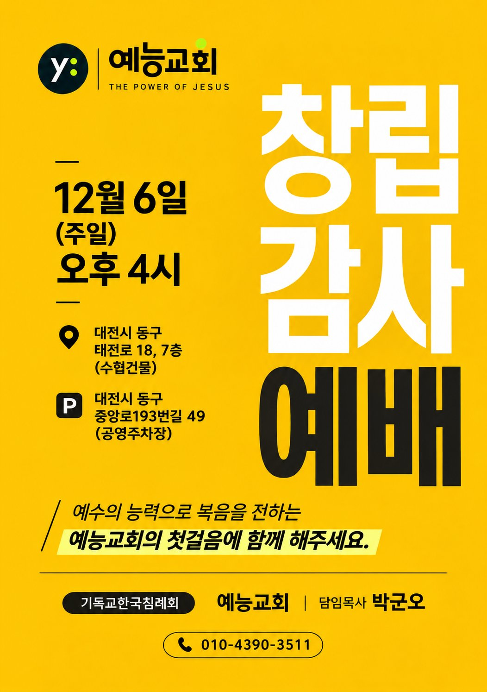
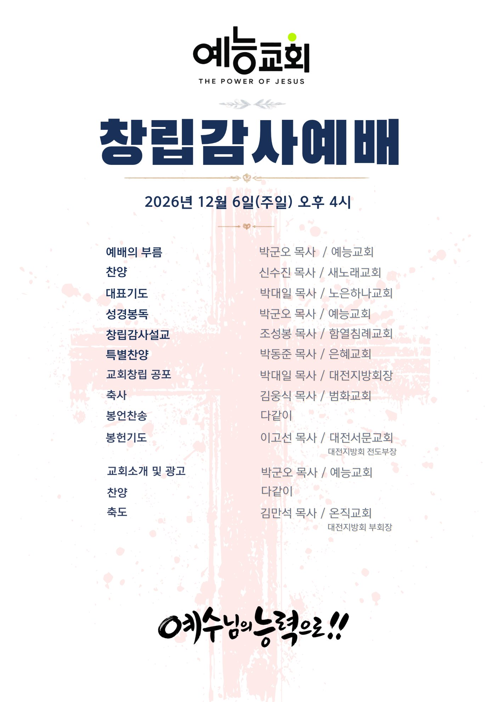
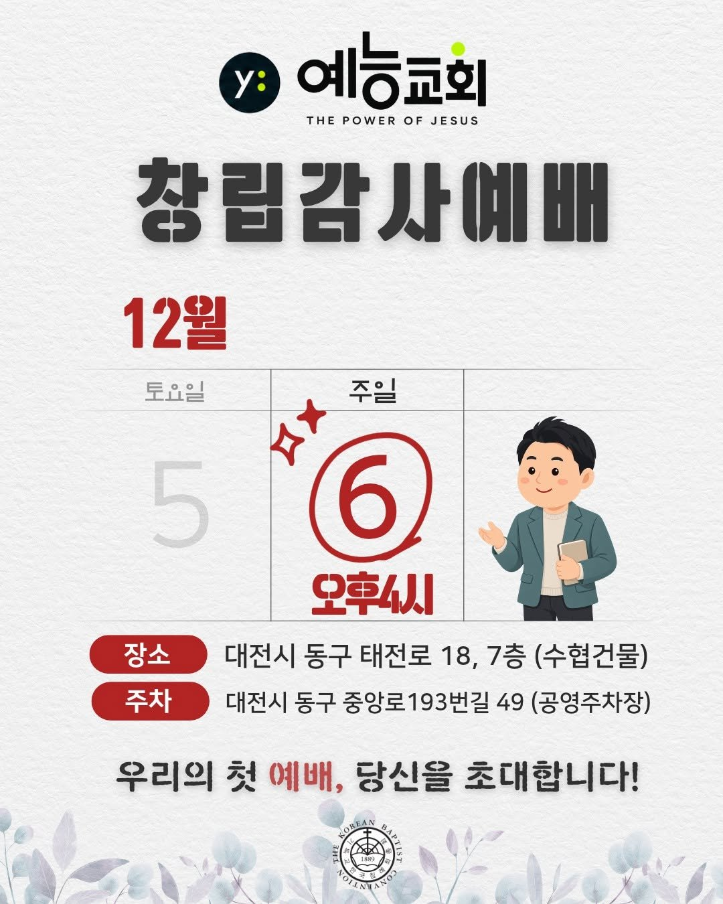
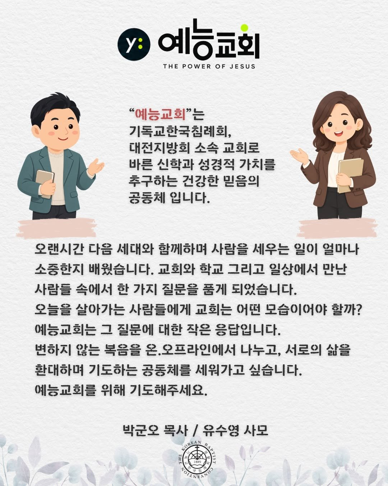
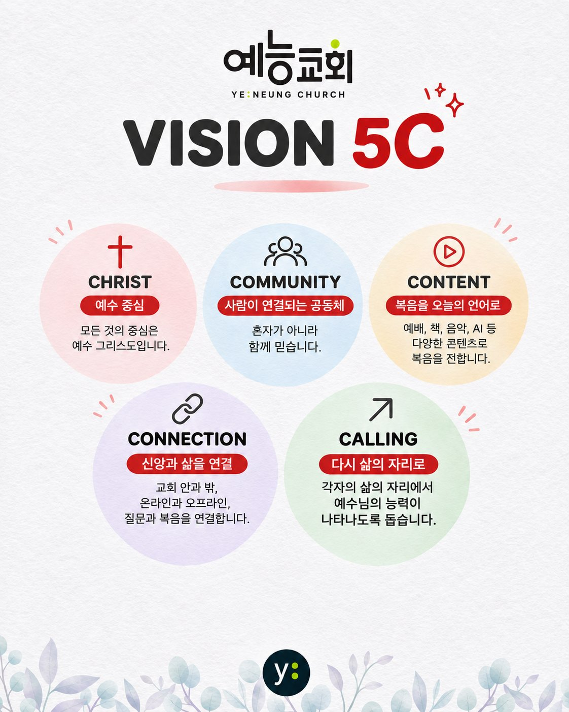

기븐미니스트리 운영위원 박군오 목사님이 대전에 예능교회(THE POWER OF JESUS)를 개척하고 첫 예배를 드립니다. 예수의 능력으로 복음을 전하는 예능교회의 첫걸음에 함께해 주세요.
예능교회는 기독교한국침례회 대전지방회 소속 교회로, 바른 신학과 성경적 가치를 추구하며 변하지 않는 복음을 온·오프라인에서 나누는 공동체를 세워가고자 합니다.



